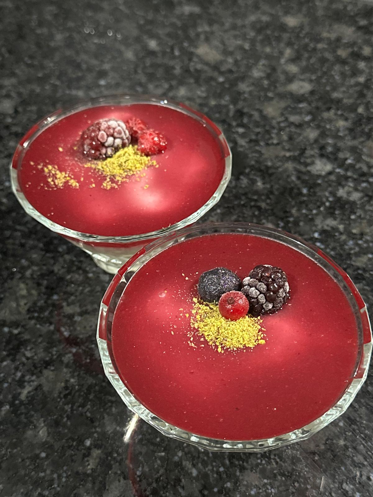

Doğal meyveli ve yumuşak kıvamıyla hafif bir tatlıdır.
Süt, nişasta, un ve tereyağı tencereye alınır, karıştırılarak pişirilir. Kaynayınca ocaktan alınır ve karıştırılarak bal eklenir.
Orman meyveleri, nişasta ve su tavaya alınır, pişirilir. Pişen sos blenderdan geçirilir ve bal eklenir.